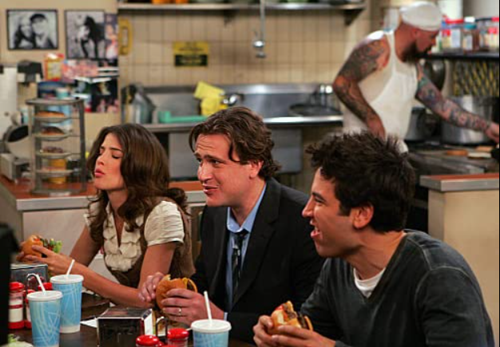

The Best Burger in New York
Burger fanatic Marshall meets Regis Philbin while on a quest to find the restaurant where he had his very first New York burger.
The Burger Episode (Season 4, Episode 2)
IMDB Rating: 8.4
The gang is at McLarens and Robin, just off her 7 days cleanse 5 days early, is dying for any kind of food. When she hears the special is a burger, she orders five for the group. However, when Marshall gets his, he refuses to eat it. After all, once you've had the best burger in New York, all other's taste like his uncle's feet.
If they're eating burgers tonight, they're eating the best burgers in New York; the journey begins. We learn that when Marshall first moved to New York with Ted, the first time he left their apartment he discovered this burger joint. It simply had a green door and a red neon sign that said "burger."
Since he had just moved, he couldn't remember how to get back there; just that it was on a numbered street. Now, eight years later, after searching all night, they finally find the place. It has been replaced by an ATM for Barney's new bank.
Source